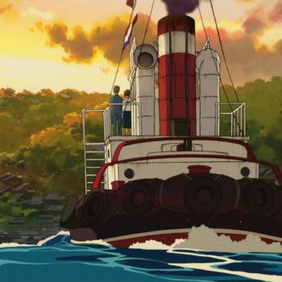
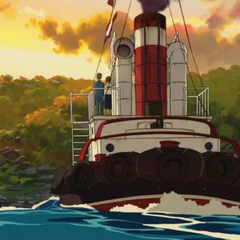

2011 | 92 min | Romance/Animação
Da Colina Kokuriko é um filme de animação japonês de 2011 dirigido por Goro Miyazaki, com roteiro de Hayao Miyazaki e Keiko Niwa, produzido pelo Studio Ghibli. O filme se passa no ano de 1963, em Yokohama, Japão, e conta a história de Umi Matsuzaki, uma menina do ensino médio que vive em uma pensão. Quando Umi conhece Shun Kazama, um membro do clube de jornais da escola, eles decidem limpar o local. No entanto, Tokumaru, o diretor da escola local e um empresário, pretende demolir o prédio para reforma e Umi e Shun, juntamente com Shiro Mizunuma, devem convencê-lo a reconsiderar. Este é o segundo trabalho de Goro Miyazaki para o Studio Ghibli. Sua estreia na direção ocorreu em Contos de Terramar, filme de 2006. Da Colina Kokuriko foi oficialmente revelado como o novo filme do Studio Ghibli em 15 de dezembro de 2010. É baseado no mangá shojo de 1980, Kokuriko-zaka kara de Tetsuo Sayama e Chizuru Takahashi.
Yokohama, 1963. O Japão está se recuperando da devastação da Segunda Guerra Mundial e se preparando para sediar as Olimpíadas. Neste cenário de esperança e mudança, uma amizade começa a florescer entre os estudantes do ensino médio Umi e Shun. Mas um segredo oculto do passado surge para lançar uma sombra sobre o futuro e separá-los.
Da Colina Kokuriko não teve estreia no Brasil ou foi lançado em mídia física. A HBO, contudo, chegou a exibir algumas vezes o filme em sua grade de programação. Atualmente a animação está disponível junto a mais outros 20 filmes do Studio Ghibli na plataforma de streaming da Netflix.

 
